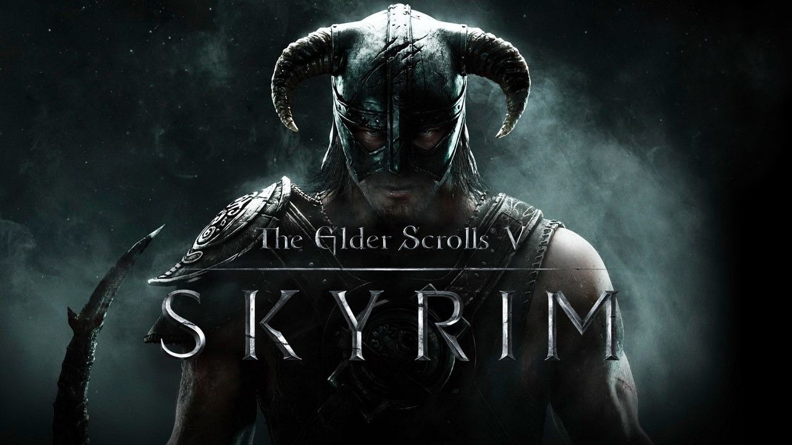

Skyrim
Skyrim är ett spel som jag fick för ca 1-2 veckor sedan men jag har spelat det ganska mycket även om jag inte är särskilt bra på det och har inte någon aning om vad det är jag gör mestadels. Det är lite tråkigt att det är ett singleplayer spel även om det är kul eftersom det alltid är roligare att spela tillsammans med någon men som tur är finns det Elderscrolls online som är typ samma sak fast multiplayer(samma universum i alla fall).
Skyrim är just nu det spel jag spelar mest när jag är ensam och jag kanske borde ha sagt det i början men skyrim är ett openworld spel med story där man fortfarande kan göra det mesta man vill. Det har massa exploits vilket låter som att det kanske är lite jobbigt att spela men enligt mig ökar det bara sätten som man kan spela på vilket gör det roligare(jag själv har använt några)
